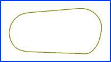
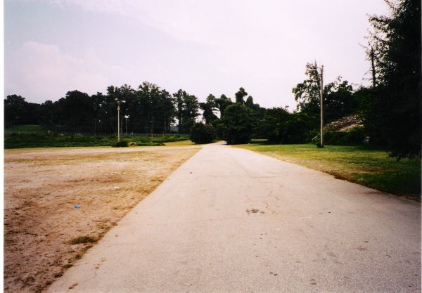
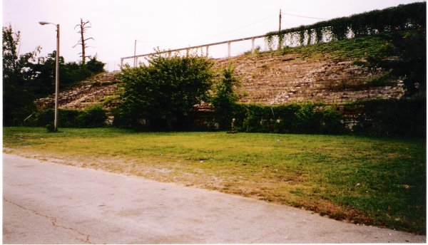
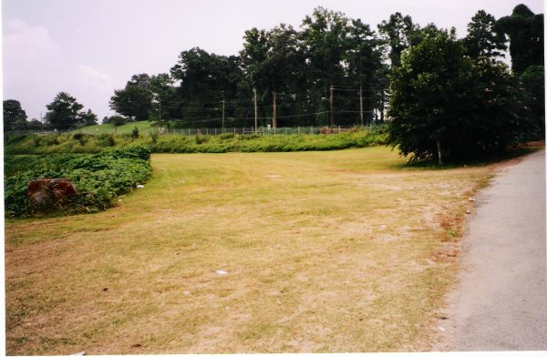
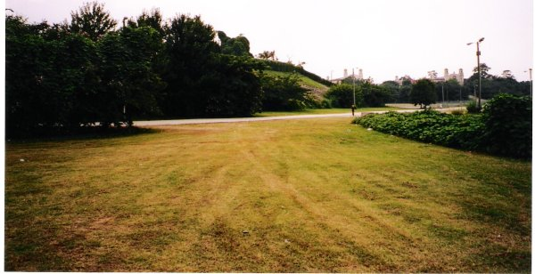
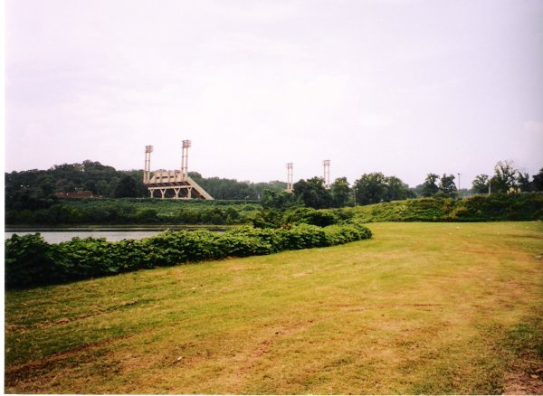
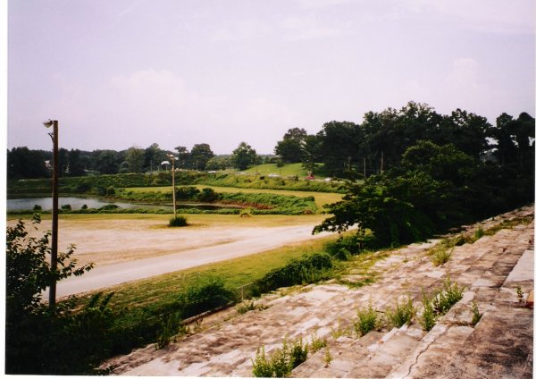
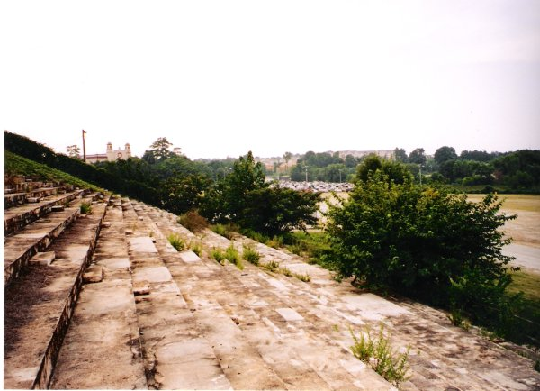

Lakewood Speedway, Georgia, United States
Type: Dirt OvalIn 1915 the Southeastern Fairgrounds were constructed south of Atlanta at Lakewood Heights, located on the site of the Pooles Creek Reservior. The flat one mile dirt oval was at times also known as the "Grand Old Lady of Racing" and the "Indianapolis of the South". The course was laid out around the perimeter of the lake, with specators seated in the main grandstand at the end of the the front straight and also on the grass banking around the track. For the first couple of years, motorsport events were restricted to motorcycle racing. The first car race took place on the 28th of July 1917, featuring match races won by Ralph DePalma and Barney Oldfield. In the late 40's and through the 50's the track hosted numerous rounds of the both the NASCAR Grand National series and the AAA/USAC National Championship. The surface however was a constant hazard, as the worn out clay caused clouds of dust to be formed during the races. These dust clouds were the cause of a double fatality at the end of the 1946 Atlanta 100-Mile Race, when Indy 500 winner George Robson failed to spot Billy DeVore's slow moving car and the two collided, causing a pileup that resulted in the deaths of both Robson and George Barringer. In 1950, NASCAR driver Skimp Hersey died in hospital after his car crashed and caught fire; the driver escaping from the wreckage and sitting on the track.engulfed in flames. In 1960, the Atlanta International Raceway was opened, the competition from this new venue contributing towards Lakewood's decline. Despite resurfacing and infrastructure improvements in 1967, and a suggestion to pave the track to attract NASCAR events, the venue eventually closed on the 3rd of September 1979.
Today, the grandstands and turn 1 are all that's left. A parking lot for an amphitheatre now occupies the area that used to be turns 3 & 4, and a road leading to that amphitheatre cuts across turn 2. The front straight is now paved as part of a road leading out onto Lakewood Avenue. Also, much of the lake has been filled in.

The 1st photo is taken on the front straight about halfway from the turn 4 area to turn 1.
The entrance into turn 1 can be seen, as well as the grandstands to the right. The light
pole on the right is just about where the start/finish line would have been.

The 2nd photo shows the grandstands from the front straight, just before the start/finish
line.

In the 3rd photo you can see the entrance to turn 1.

The 4th photo looks back from the middle of turn 1 toward the grandstands.

The 5th photo shows the edge of the lake, the apex between turns 1 & 2, and how turn 2
now ends against the road leading into the amphitheatre. That area of the lake on the
inside of turn 1 is really the only area of the lake still left that hasn't been filled in
or in some other way altered.

This view from the grandstands looks into turn 1. You can see the edge of the lake and the
end of the pit area also.

From the same vantage point you see back toward the old turns 3 and 4. When I was last at
Lakewood for AMA bike races in the 70's, my father and I sat just about at this point.
You'd lose sight of the bikes as they went into 4, as even without the overgrowth, the
grandstand masked the sight line onto the main straight. All of a sudden the bikes would
explode into view, almost laying down sideways to lose speed into turn 1. It remains one
of the most exciting places I've ever watched racing.
Return to racingcircuits.net's Photo Archive Main Index
Photographs and details kindly supplied by Mark E. Pullen